السرعات النسبية بين الباريونات والمادة المظلمة في محاكاة التكبير الكونية
الملخص
تؤثر الحركة النسبية فوق الصوتية بين الباريونات والمادة المظلمة، الناجمة عن انفصال الباريونات عن البلازما البدئية بعد إعادة التركيب، في نمو أولى البنى الصغيرة المقاييس. يلزم استعمال أحجام صناديق كبيرة (أكبر من بضع مئات من Mpc) لأخذ العينة الكاملة من المقاييس ذات الصلة بالسرعة النسبية، بينما يكون أثر السرعة النسبية أقوى على المقاييس الصغيرة (أصغر من بضع مئات من kpc). وهذا الفصل بين المقاييس يجعل استعمال محاكاة ‘التكبير’ ملائما على نحو طبيعي، ونقدم هنا منهجيتنا كي نُدرج ذاتيا على نحو متسق السرعة النسبية في محاكاة التكبير، بما في ذلك أثرها التراكمي منذ إعادة التركيب حتى زمن بدء المحاكاة. نطبق منهجيتنا على محاكاة تكبير كونية كبيرة المقياس، ونجد أن إدراج السرعات النسبية يخفض كسر الباريونات في الهالات بمقدار – في المائة بين و ، في توافق نوعي مع الأعمال السابقة. وإضافة إلى ذلك، نجد أن إدراج السرعة النسبية يؤخر تشكل جسيمات النجوم بمقدار في المتوسط (وهو من رتبة عمر نجم من الجمهرة الثالثة Population III كتلته ) ويخفض الكتلة النجمية النهائية بما يصل إلى في المائة عند .
keywords:
المجرات: الانزياح الأحمر العالي – العصور المظلمة، إعادة التأين، النجوم الأولى – علم الكونيات: النظرية1 المقدمة
يحمل إشعاع الخلفية الكونية الميكروي (CMB) صورة للكون عند لحظة إعادة التركيب، حين تكونت أولى الذرات المتعادلة عند . قبل إعادة التركيب، كانت الفوتونات والباريونات مقترنة اقترانا وثيقا، وكانت تتذبذب كبلازما واحدة إلى أن انفصلت عند . وتُعرف هذه التذبذبات باسم التذبذبات الصوتية الباريونية (BAO)، وتُرصد اليوم على هيئة تقلبات في درجة حرارة CMB (مثلا Planck Collaboration et al., 2020). وتؤدي التذبذبات الصوتية في سرعة الباريونات عند لحظة انفصالها إلى تكتل في توزع الباريونات في الأزمنة اللاحقة، فتنتج مناطق مفرطة الكثافة وأخرى ناقصة الكثافة. وقد نمت الاضطرابات الصغيرة جدا في البداية تحت تأثير الجاذبية، وتُكشف اليوم في توزع المجرات على أكبر المقاييس الكونية (مثلا Alam et al., 2017).
لم تؤد تذبذبات البلازما إلى سمات BAO في توزع الباريونات بعد إعادة التركيب فحسب، بل أثرت أيضا في سرعات الباريونات (Sunyaev & Zeldovich, 1970). كان Tseliakhovich & Hirata (2010) أول من أشار إلى أن نمط BAO مطبوعة بصمته في مقدار السرعة النسبية بين الباريونات والمادة المظلمة، لأن الأخيرة لم تكن مقترنة بالبلازما البدئية عند زمن إعادة التركيب. وعند الانفصال، كان للسرعة النسبية جذر متوسط تربيعي (RMS) مقداره ، أو حيث هي سرعة الضوء. توجد فجوة هائلة في المقاييس ذات الصلة بالسرعة النسبية. فعلى المقاييس الأصغر من بضعة Mpc (مقياس الترابط)، تكون السرعة النسبية ثابتة تقريبا؛ غير أن أحجام صناديق أكبر من بضع مئات Mpc مطلوبة لأخذ عينة ملائمة من السرعة النسبية (انظر الشكل 1 في هذا العمل وكذلك الشكل 1 في Tseliakhovich & Hirata, 2010). وعند إعادة التركيب، هبطت سرعة الصوت في المائع الباريوني من كونها نسبية، ، إلى السرعات الحرارية لذرات الهيدروجين، ، وهي أصغر بكثير من قيمة RMS البالغة . ومن ثم، كانت الباريونات في المتوسط عند الانفصال تسير بسرعات فوق صوتية بالنسبة إلى آبار الكمون الكامنة التي تولدها هالات المادة المظلمة (Tseliakhovich & Hirata, 2010). وبقيت السرعة النسبية فوق صوتية حتى ، مسببة صدمات وتوليد إنتروبيا (Tseliakhovich & Hirata, 2010; O’Leary & McQuinn, 2012). واضمحل اتساع حقل السرعة مع الزمن وفق ، ولذلك ضعف الأثر مع تمدد الكون. فعلى سبيل المثال، وُجد أن بصمة في طيف القدرة عند المنخفض لمجرات BOSS (Yoo & Seljak, 2013; Beutler et al., 2017) وفي دالة الارتباط ثلاثية النقاط لمجرات BOSS CMASS ضئيلة (Slepian & Eisenstein, 2015; Slepian et al., 2018).
في الكون بعد إعادة التركيب، يوصف نمو البنية على المقاييس الكونية الكبيرة عموما بنظرية الاضطرابات الخطية، التي تتبع تطور حقول الكثافة والسرعة إلى الرتبة الرائدة في الاضطرابات. وعلى الرغم من أن الحدود التي تتضمن السرعة النسبية فوق الصوتية إسهامات من الرتبة الثانية شكليا، فإنها يمكن في الواقع أن تكون كبيرة بقدر حدود الرتبة الأولى. وعلاوة على ذلك، على المقاييس دون مقياس الترابط، يكون غير معتمد على الموضع، فتصبح حدود الرتبة الثانية خطية بفعالية (Tseliakhovich & Hirata, 2010). وباستخدام مثل هذا النهج ‘شبه الخطي’، استُخدمت طرائق تحليلية لاستكشاف تداعيات في السياق الكوني. تعدل السرعات النسبية فوق الصوتية وفرة الهالات الصغيرة ومحتواها الغازي على مقياس BAO (مثلا Tseliakhovich & Hirata, 2010; Tseliakhovich et al., 2011; Fialkov et al., 2012; Ahn, 2016; Ahn & Smith, 2018)، مؤثرة في تقلبات إشارة 21 سم للهيدروجين المتعادل (مثلا Dalal et al., 2010; McQuinn & O’Leary, 2012; Visbal et al., 2012; Fialkov et al., 2013; Cohen et al., 2016; Fialkov et al., 2018; Muñoz, 2019; Cain et al., 2020; Muñoz et al., 2022; Long et al., 2022).
استُخدمت المحاكاة العددية لاستكشاف الآثار غير الخطية لـ على مقاييس أدنى بكثير من مقياس ترابطها. وتستعمل هذه المحاكاة عادة صناديق حجمها عدة Mpc مرافقة أو أقل، وتفترض حقلا للسرعة غير معتمد على الموضع. وقد أظهرت هذه المحاكاة أن يثبط تشكل هالات صغيرة من المادة المظلمة (Naoz et al., 2012, 2013; O’Leary & McQuinn, 2012)، ويُحدث صدمات (O’Leary & McQuinn, 2012)، ويؤثر في تشكل النجوم الأولى (مثلا Maio et al., 2011; Stacy et al., 2011; Greif et al., 2011; Schauer et al., 2019, 2021) والثقوب السوداء (مثلا Hirano et al., 2017; Schauer et al., 2017)، وقد يؤثر حتى في تشكيل العناقيد الكروية (Naoz & Narayan, 2014; Chiou et al., 2018; Chiou et al., 2019, 2021; Druschke et al., 2020; Lake et al., 2021).
وأخيرا، استُخدم نهج هجين لإدخال الآثار غير الخطية في الصورة الكونية الكبيرة عبر تبليط مناطق ذات ثابتة معا (مثلا Visbal et al., 2012; Fialkov et al., 2013). في مثل هذه الدراسات، وُلد توزع على مقاييس أكبر من حجم ‘البكسل’ من حقل الكثافة المقابل باستخدام معادلة الاستمرارية، بينما عُير تشكل النجوم في كل ‘بكسل’ وفق محاكاة عددية (Maio et al., 2011; Stacy et al., 2011; Greif et al., 2011; Naoz et al., 2012, 2013). وطُبقت هذه الطريقة على إشارة 21 سم للهيدروجين المتعادل، كاشفة أنماطا معززة من BAO (Visbal et al., 2012; Fialkov et al., 2013).
لالتقاط الأثر غير الخطي لـ في السياق الكوني التقاطا كاملا، يلزم إدراج أثر السرعة على نحو ملائم في الشروط الابتدائية لمحاكاة -جسم والمحاكاة الهيدروديناميكية. وتتطلب هذه المهمة معالجة غير خطية دقيقة للمادة المظلمة والباريونات والإشعاع، تبدأ عند وتتبع نمو البنية حتى أدنى انزياح أحمر مُحاكى. هذه المعالجة غير ممكنة بسبب المجال الديناميكي الكبير: فاتساع تقلبات الكثافة عند إعادة التركيب أصغر من دقة كثير من مخططات التكامل الشائعة الاستخدام. أما اليوم، فتبدأ المحاكاة العددية المتقدمة عادة عند بحقول لا تدرج أثر السرعة النسبية.
حديثا، قدم Ahn & Smith (2018) مولدا جديدا للشروط الابتدائية الكونية bccomics، مبنيا على شفرة تحل المعادلات شبه الخطية بين و لقيم ثابتة من الكثافة كبيرة المقياس، ، ومن عند الانفصال (Ahn, 2016). بعد ذلك، يُطبق الحال على حجم كوني أكبر مقسّم إلى مناطق ذات و ثابتتين. وتحاكي الشفرة نمو البنية صغيرة المقياس داخل قمم الكثافة والفراغات، عبر معاملة كل رقعة ذات و ثابتتين كأنها كون منفصل. يفعلون ذلك لأن معادلات التطور من Tseliakhovich & Hirata (2010) صالحة فقط عند الكثافة المتوسطة، ووجد Ahn (2016) أن تشكل البنية يتعزز (يتثبط) في الرقع مفرطة الكثافة (ناقصة الكثافة). وقد قدروا أثر و في وفرة الهالات الصغيرة، وأبلغوا في بعض الحالات عن اختلاف نوعي مع أعمال سابقة.
نتبع هنا نهجا مستقلا ونطور مولدا جديدا للشروط الابتدائية. يختلف نهجنا عن نهج bccomics، إذ إننا بدلا من معاملة الرقع الصغيرة أكوانا منفصلة، نتتبع رقعا صغيرة مغمورة في حجم كوني أكبر باستخدام محاكاة التكبير. ونعوض الأثر المفقود لـ بين و باستخدام عامل انحياز، موصوف في القسم 3.3. بعد هذا التعويض، يُدرج أثر بدءا من طبيعيا بواسطة المحاكاة، من خلال تهيئة المحاكاة بدوال انتقال منفصلة لسرعات الباريونات والمادة المظلمة. وخلافا لـ Ahn (2016)، لا نأخذ بيئة الكثافة كبيرة المقياس في الحسبان، لأن محاكاتنا تركز على رقعة قريبة جدا من الكثافة المتوسطة ومن ثم يمكننا إهمال الأثر في تشكل البنية الناجم عن كثافة زائدة غير صفرية بأمان. تستخدم منهجيتنا الشفرة واسعة الاستعمال music (Hahn & Abel, 2011) لتوليد شروط ابتدائية ‘تكبيرية’ عالية الدقة (Bertschinger, 2001) في أحجام كونية كبيرة، وهي مصممة لتناسب محاكاة AMR جيدا. ونبرهن الأداء بتوليد شروط ابتدائية في صندوق قبل استخراج صندوق فرعي ، يُستخدم لتشغيل محاكاة من إلى الانزياح الأحمر النهائي باستخدام شفرة AMR ramses (Teyssier, 2002). ونستكشف الأداء بحساب آثار في عدد الهالات المتشكلة، وكسر الباريونات، وتكون النجوم.
تنظم الورقة كما يأتي: في القسم 2، نستعرض بإيجاز الخلفية النظرية ونناقش سبب الحاجة إلى أحجام صناديق محاكاة كبيرة؛ وفي القسم 3، نناقش إعداد المحاكاة ومنهجيتنا لإدراج أثر عبر معامل انحياز معتمد على المقياس ؛ وفي القسم 4، نعرض نتائج أول برهنة لمنهجيتنا ونناقش النتائج في القسمين 5 و 6. ونقدم مقارنة بين منهجيتنا وبعض الأعمال السابقة في الملحق A. في هذه الورقة كلها، نفترض كونية مسطحة متسقة مع نتائج Planck 2018 (Planck Collaboration et al., 2020) بالمعاملات: ، ، ، ، و 11 1 حيثما تُعبَّر الوحدات بدلالة ، يمكن أخذها مساوية لهذه القيمة..
2 النظرية
في هذا القسم، نستعرض بإيجاز الخلفية النظرية ذات الصلة، ونحيل القارئ إلى Fialkov (2014) وBarkana (2016) لمراجعات أشمل.
في النظام غير الخطي، يحكم تطور كثافة وسرعة الباريونات والمادة المظلمة ما يأتي:
| (1) |
حيث إن و اضطرابان عديمان الأبعاد في كثافتي الباريونات والمادة المظلمة على الترتيب، و و هما سرعتا الباريونات والمادة المظلمة على الترتيب، و هو عامل القياس، و هو معامل هابل، و هو الكمون الثقالي، و هو الضغط الباريوني، و و هما الكثافتان المتوسطتان للباريونات والمادة الكلية، على الترتيب.
اتباعا لـ Tseliakhovich & Hirata (2010)، نقسم السرعات إلى حركة كلية مترابطة، (ذات مقدار )، و اضطرابات سرعة عشوائية، و، بحيث يمكن في إطار المادة المظلمة الباردة كتابة السرعات على الصورة و .
ومع أنها حدود من الرتبة الثانية، فإن المركبات التي تتضمن كبيرة للقيم النموذجية لـ عند الانزياحات الحمراء العالية. وإضافة إلى ذلك، تصبح هذه الحدود من الرتبة الأولى بفعالية على المقاييس التي يكون فيها مترابطا. في هذا النظام شبه الخطي، تتطور اضطرابات الكثافة ( و) والسرعات ( و) وفق مجموعة المعادلات الآتية:
| (2) |
حيث هو تباعد السرعة في الإحداثيات المرافقة (رغم أننا، خلافا لـ Tseliakhovich & Hirata 2010، نعمل في إطار سكون المادة المظلمة؛ وانظر أيضا ملحق O’Leary & McQuinn, 2012)، و هو التقلب في درجة حرارة الباريونات، و هو ثابت بولتزمان، و هو الوزن الجزيئي المتوسط، و هو كتلة البروتون. كل من معاملي كثافة الباريونات والمادة المظلمة و دالتان في (نحذف الاعتماد الصريح طلبا للوضوح).
شدد Naoz & Barkana (2005, 2007) على أهمية الضغط الباريوني لنمو أنماط الكثافة، وهذا يتطلب حل معادلة إضافية لتتبع التقلبات في درجة الحرارة . نتبع Bovy & Dvorkin (2013) وAhn (2016) في إهمال تتبع التقلبات في كثافة الفوتونات ودرجة حرارتها ضمن معادلات التطور، إذ إنها دون-مهيمنة عند معظم المقاييس والانزياحات الحمراء التي تهمنا. ثم نضيف معادلة تقلبات درجة الحرارة
| (3) |
إلى المعادلات (2)، حيث
| (4) |
و هو متوسط درجة حرارة الفوتونات، و هو كسر الإلكترونات من العدد الكلي لكثافة جسيمات الغاز عند الزمن ، و هو متوسط درجة حرارة الغاز، و هو متوسط كثافة طاقة الفوتونات عند ، و هو مقطع تشتت تومسون للإلكترون، و هو كتلة الإلكترون. ويُحسب كل من و باستخدام recfast++ (Seager et al., 1999; Chluba et al., 2010; Chluba & Thomas, 2011). وتُضبط الشروط الابتدائية لـ كما في Naoz & Barkana (2005) بواسطة اشتراط أن تكون عند الانزياح الأحمر الابتدائي ، حيث يُحسب من camb (Lewis et al., 2000). ويمكن حل مجموعة المعادلات الخطية أعلاه باستخدام شفرة متاحة علنا، مثل cicsass (O’Leary & McQuinn, 2012). نعيد تنفيذ نسخة python من cicsass، وهي تكمل منهجيتنا. في التنفيذ الحالي، ومن أجل البساطة، نهمل اتجاهية عند حل هذه المجموعة من المعادلات، ونأخذ بدلا من ذلك (أي نفترض أن مواز لـ ). وستأخذ التطبيقات المستقبلية اتجاهية في الحسبان.
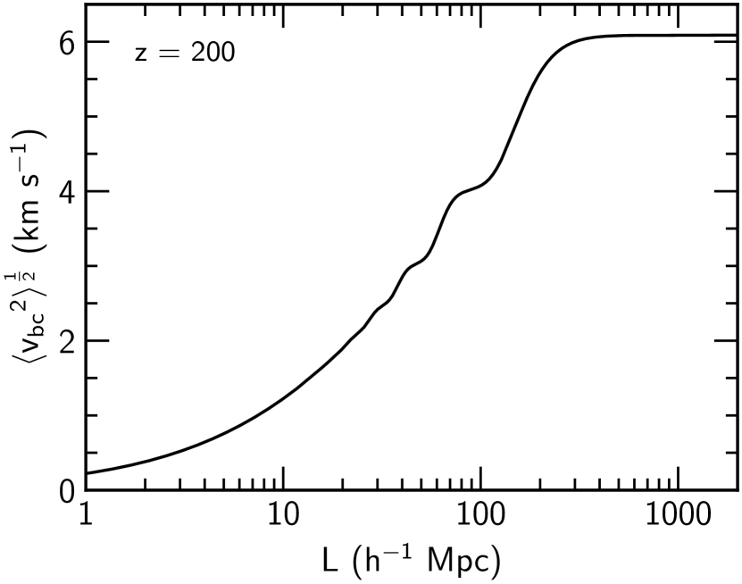
أظهر Tseliakhovich & Hirata (2010) أن معظم الإسهامات في تباين تأتي من مقاييس بين و. وعلى نحو مشابه لـ Pontzen et al. (2020)، يمكننا حساب قيمة RMS لـ داخل صندوق حجمه بتكامل طيف قدرة تقلبات من النمط الأساسي للصندوق إلى اللانهاية. ويُعطى متوسط مربع في صندوق حجمه بـ
| (5) |
حيث هو طيف القدرة العديم الأبعاد لـ ، مأخوذا من camb ونظريا ينبغي أن يكون الحد الأعلى للتكامل في المعادلة (5) هو عدد الموجة الأعظمي للصندوق، الذي يحدده عدد عناصر المحاكاة. غير أنه عمليا، يكفي أي حد أعلى ، لأن طيف قدرة ينخفض بسرعة فوق هذه القيمة. يبين الشكل 1 قيمة RMS لـ ، محسوبة بوصفها الجذر التربيعي لـ المعادلة (5)، حيث تظهر بوضوح الطبيعة التذبذبية لـ عند المنخفضة (قارن بالشكل 1 في Tseliakhovich & Hirata, 2010). ومن الشكل 1، نرى أنه حتى في صندوق حجمه ، لا نلتقط كل المقاييس ذات الصلة بـ . ولا يبدأ المنحنى في بلوغ هضبة إلا حول ، ولذلك فإن استخدام حجم صندوق أصغر من هذا يعني أننا قد نفقد جزءا من الأثر، مثلا بعدم أخذ عينات من القيم المتطرفة لـ . ومحاكاة هذا الصندوق الكبير المقياس ومنطقة التكبير ذات الدقة العالية جدا اللازمة لرصد الأثر في الوقت نفسه أمر غير قابل للتنفيذ حسابيا. في القسم 3.2، نناقش حلنا لهذه المشكلة.
3 الطرائق
3.1 المحاكاة
نتتبع تطور المادة المظلمة والغاز والنجوم في السياق الكوني باستخدام ramses22 2 النسخة المستخدمة هنا هي الإيداع aa56bc01 من فرع master. لاحظ أن النسخ الأقدم من ramses قد لا تستخدم افتراضيا حقولا منفصلة لسرعات المادة المظلمة والباريونات.، التي تستخدم طريقة غودونوف من الرتبة الثانية لحل معادلات الهيدروديناميكا. وتحسب حالات الغاز عند واجهات الخلايا باستخدام حال ريمان Harten-Lax-van Leer-contact، مع محدد ميل MinMod. وتُمثل المادة المظلمة والنجوم كنظام -جسم عديم التصادم، موصوف بمعادلات فلاسوف-بواسون. وينفذ تنقيح الشبكة كلما احتوت خلية على أكثر من ثمانية جسيمات مادة مظلمة عالية الدقة، أو امتلكت المقدار المكافئ من الكتلة الباريونية مضروبا في . ونسمح لشبكة AMR بأن تتنقح من المستوى الأغلظ إلى المستوى الأدق ، لكن في التطبيق العملي يعني حبس الشبكة داخل ramses أن أدق مستوى يُبلغ هو ، مقابلا دقة مرافقة عظمى مقدارها 33 3 إن إطلاق مستويات أعلى من شبكات AMR عند خطوات محددة في عامل القياس (‘حبس الشبكة’) تقنية مستخدمة في ramses لضمان أن الدقة الفيزيائية (لا المرافقة) تبقى ثابتة تقريبا على كامل المحاكاة، وهو أمر مرغوب مثلا لضمان ألا تفرط الخلايا عند الانزياحات الحمراء العالية في التنقيح فتحتوي على كتلة ضئيلة جدا لتكوين نجوم. أجرى Snaith et al. (2018) دراسة مفصلة لـ آثار حبس الشبكة في خواص المحاكاة، ووجدوا، من بين نتائج أخرى، أن الإطلاق المفاجئ للشبكات عالية الدقة يمكن أن يؤدي إلى ارتفاعات حادة في معدل تشكل النجوم. تبلغ محاكاتنا أعلى مستوى تنقيح لها قبل حدوث أي تشكل للنجوم، ومن ثم لا تتأثر بآثار حبس الشبكة هذه في تشكل النجوم.
يُسمح بتشكل النجوم كلما كانت كثافة الغاز في خلية أكبر من بوحدات كثافة عدد ذرات الهيدروجين، وعندما تكون الكثافة الزائدة المحلية أكبر من ، حيث يمنع الشرط الأخير تشكلا نجميا زائفا عند انزياح أحمر عال جدا. ونفرض دالة درجة حرارة عديدة الحدود ذات دليل و ، ما يضمن أن طول جينز محلول دائما بثماني خلايا على الأقل. ولا نعاير معاملات تشكل النجوم بدقة لإعادة إنتاج أي علاقة كتلة نجمية-كتلة هالة، لأن اهتمامنا ينحصر في الفروق بين المحاكاة. وتتكون الجسيمات النجمية، التي تمثل جمهرة من النجوم، بكتلة مقدارها . ويدرج تغذية المستعرات العظمى الراجعة باستخدام نموذج التغذية الراجعة الحركية لـ Dubois & Teyssier (2008)، مع كسر كتلي ومردود معدني 0.1. ونسمح بتبريد الغاز ونتتبع حمل المعادن. ولا ندرج الهيدروجين الجزيئي في هذه المحاكاة، ولذلك، في محاولة للتعويض عن قناة التبريد المفقودة هذه، نهيئ منطقة التكبير بمعدنية ، حيث في ramses.
3.2 الشروط الابتدائية
كما وصفنا في القسم 2، تلزم أحجام صناديق مقدارها لالتقاط كل المقاييس المتعلقة بـ . ومن خلال تشغيلات معايرة، وجدنا أن دقة عالية جدا (حجم خلية ) مطلوبة في الشروط الابتدائية لحل الأثر على نحو ملائم. وتحقيقا لهذه الغاية، نستعمل شروطا ابتدائية (ICs) ‘تكبيرية’، فنولد حقول الكثافة والسرعة عند أولا في صندوق باستخدام music (Hahn & Abel, 2011). وتُنقح الشروط الابتدائية من مستوى الأساس (،) حتى (، فعال) في مكعب طول ضلعه عند أدق مستوى. هذه الدقة العالية جدا مطلوبة لأن يثبط تشكل البنى على مقاييس صغيرة جدا. وقد وجدنا أن الدقة التي استخدمناها في هذا العمل هي الحد الأدنى اللازم لرصد أثر ، وأن استخدام دقة أدنى يفوّت الأثر إلى حد كبير. وبما أن منطقة التكبير صغيرة جدا مقارنة بحجم الصندوق، نستخدم حشوا إضافيا بين مستويات التكبير، فنزيد عدد خلايا الحشو على كل جانب لكل بعد من القيمة النموذجية إلى . ونستخدم دوال انتقال من camb (Lewis et al., 2000)، التي تعطي حقول كثافة وسرعة متميزة للباريونات والمادة المظلمة.
| Case | Modified? | () | ||
|---|---|---|---|---|
| no | 0.0 | 0.0 | ||
| –ini | no | 0.0 | 20.09 | |
| –rec | yes | 100.07 | 20.09 |
لجعل المحاكاة قابلة للتنفيذ، نستخرج شبكة أساس (، ) من صندوق (، ،)، ونستخدمها بوصفها أغلظ مستوى لدينا، ما يعني أن مستوى التنقيح الأعظمي في منطقة التكبير ينخفض أيضا مستويين من إلى (، فعال). ومن حيث المبدأ، قد يؤدي هذا الخيار المنهجي إلى بعض الخطأ حول حواف الصندوق نتيجة استخدام شروط حدية دورية مع شروط ابتدائية غير دورية، إلا أننا عمليا نتوقع أن يكون أثر ذلك ضئيلا لأننا نهتم بمنطقة دون في مركز الصندوق. إضافة إلى ذلك، ستكون هذه الأخطاء مشتركة بين التشغيلات، ولذلك سيتلاشى أثرها عند المقارنة بين التشغيلات.
يفصل الجدول 1 مجموعات الشروط الابتدائية المستخدمة في هذا العمل. وقد اخترنا منطقة للتكبير ذات عند ، وذلك يقابل ، أو ، عند إعادة التركيب. وغالبا ما تُستخدم حالة في المحاكاة الكونية، مثلا عند استخدام دوال انتقال لا تمتلك اتساعات منفصلة لحقلي سرعة الباريونات والمادة المظلمة (بل إنها السلوك الافتراضي للنسخ الأقدم من ramses، حيث يُستخدم حقل سرعة المادة المظلمة لتهيئة سرعتي المادة المظلمة والباريونات معا). أما حالة –ini فهي حيث تُهيأ المحاكاة باستخدام دوال انتقال منفصلة لحقلي سرعة الباريونات والمادة المظلمة، مثل توليد الشروط الابتدائية باستخدام music مع دوال انتقال من camb. في هذه الحالة، يُدرج منذ زمن بدء المحاكاة ، لكن أثر في اضطرابات الكثافة والسرعة بين إعادة التركيب و يكون مفقودا. وفي الحالة الأخيرة، والأكثر واقعية، –rec، ندرج إسهامات عبر كل بحساب عامل انحياز يُطبق على الشروط الابتدائية. وتفصل منهجية حساب عامل الانحياز في القسم 3.3.
3.3 عامل الانحياز
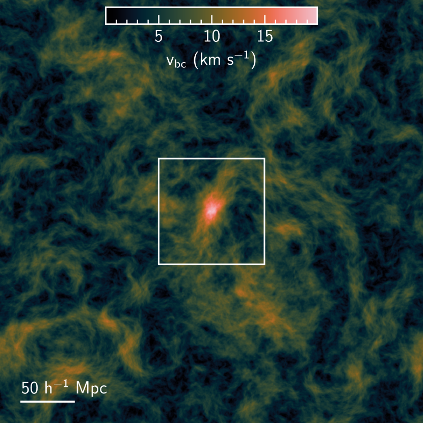
إن استخدام دوال انتقال ذات اتساعات متميزة لتقلبات سرعة الباريونات والمادة المظلمة ينتج طبيعيا حقل عند زمن بدء المحاكاة . أولا، نستوفي سرعات جسيمات المادة المظلمة على الشبكة نفسها المستخدمة للباريونات، ثم نأخذ الفرق بين هذين الحقلين لحساب المقدار كما يأتي . ويبين الشكل 2 مقطعا بسماكة عبر حقل الناتج.
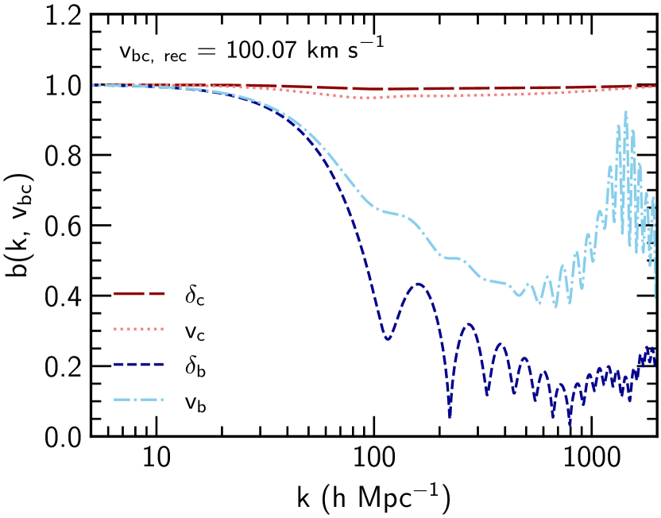
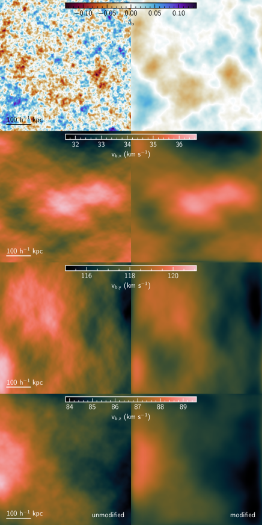
بعد الحصول على حقل ، نقسم شروطنا الابتدائية إلى رقع مكعبة، مستهدفين امتداد رقعة ، وإن كان الامتداد الفعلي يعتمد على عدد الرقع التي يمكن ملاءمتها في كل مستوى من ملفات grafic. واختير حجم هذه الرقع ليكون أصغر من المقياس الذي يكون عليه مترابطا (Tseliakhovich & Hirata, 2010). وداخل كل رقعة، تُحسب القيمة المتوسطة لـ وتُستخدم بوصفها في المعادلات (2). وتُضبط القيم الابتدائية لـ المعادلات (2) باستخدام دوال الانتقال من camb عند ، وتُكامل المعادلات من إلى باستخدام حال المعادلات التفاضلية العادية lsoda. وتُحل المعادلات (2) لقيمة الرقعة المتوسطة لـ ، وكذلك لـ ، وهو ما يعطي أطياف قدرة لاضطرابات الباريونات مع وبدونه. ونستخدم أطياف القدرة هذه لحساب عامل ‘انحياز’ عند يعتمد على كل من المقياس ومقدار السرعة النسبية
| (6) |
حيث ينشأ الجذر التربيعي من . وفي الشكل 3، نعرض عامل الانحياز لكثافات الباريونات والمادة المظلمة ( و) وسرعاتهما ( و)، محسوبا لمتوسط في منطقة التكبير لدينا. ويظهر أقوى تثبيط في الباريونات، وبخاصة في كثافة الباريونات، بينما تكاد المادة المظلمة لا تتأثر. لا نتوقع أن يكون للسمات التذبذبية في عند المقاييس الصغيرة جدا أثر كبير، إن وجد، لأن طيف قدرة التقلبات في تباين كثافة الباريونات يبدأ بالهبوط بسرعة عندما ، بينما توجد معظم القدرة في السرعة عند مقاييس أكبر بكثير. وقد وجد Ali-Haïmoud et al. (2014) أيضا سمات تذبذبية في اضطرابات الباريونات صغيرة المقياس، وقد تحققنا من أننا نجد تذبذبات مشابهة للقيم النموذجية لـ ، ونجد أيضا أن زيادة مقدار تزيد تردد التذبذبات لأنماط المقاييس الأكبر () أيضا. ولدراسة مفصلة في أصل هذه التذبذبات صغيرة المقياس، نحيل القارئ إلى Ali-Haïmoud et al. (2014). ثم يُلف هذا العامل مع تحويل فورييه للرقعة المقابلة من الكثافة الزائدة الباريونية
| (7) |
ليعطي رقعا فردية من الكثافة الزائدة المنحازة ، التي تُخاط معا بعد ذلك لتوليد مجموعة الشروط الابتدائية –rec. وبهذه الطريقة، يعوض عامل الانحياز تثبيط اضطرابات الباريونات بين و المفقود إذا أُدرج فقط بدءا من . ولا نعدل إلا الباريونات، لأنها، كما نوقش أعلاه، تتأثر بقوة أكبر بكثير من المادة المظلمة، كما يتضح من الشكل 3.
نتعامل مع حقل السرعة الخاصة للباريونات بطريقة مشابهة، وذلك بتحويل تباعد السرعة أولا إلى سرعات خاصة كما في . لاحظ مجددا أننا لا ندرج الاتجاهية عند حل معادلات التطور، ولذلك يطبق عامل الانحياز على كل اتجاه من بالتساوي. وفي الواقع، ستوجد اتجاهات مفضلة لعامل الانحياز، تبعا لاتجاه ، لكننا نؤجل هذا التنفيذ إلى عمل مستقبلي.
يبين الشكل 4 مقطعا بسماكة عبر أعلى مستوى دقة من شروط التكبير الابتدائية مباشرة من music (‘غير معدلة’، العمود الأيسر) وبعد تطبيق عامل الانحياز (‘معدلة’، العمود الأيمن). وبالنسبة إلى (الصف العلوي)، تحتوي الشروط الابتدائية غير المعدلة على كثير من البنية صغيرة المقياس، التي تُمحى تقريبا بالكامل بعد تطبيق . ومعظم ما يبقى يكون على شكل تقلبات أضعف اتساعا وأكبر مقياسا. أما بالنسبة إلى (الصفوف السفلى)44 4 لاحظ أننا نعرض لكل اتجاه طلبا للاكتمال، لكن الأثر مستقل عن الاتجاه في منهجيتنا.، فتكون البنية صغيرة المقياس أقل في الأصل، لأن حقول السرعة الخاصة تهيمن عليها المقاييس الكبيرة. ولذلك يكون أثر في أقل لفتا بكثير منه في ، ويتمثل الأثر الرئيس في التنعيم وخفض طفيف في الاتساع.
3.4 الهالات
بعد تهيئة الشروط الابتدائية تهيئة صحيحة مع ، يمكننا توصيف أثر في تشكل البنى، أساسا باستكشاف كيفية تأثر الهالات. تُحدد الهالات باستخدام ahf (Gill et al., 2004; Knollmann & Knebe, 2009)، الذي يدعم مجموعات بيانات متعددة الدقة ويحسب الخواص الباريونية للهالات. ولاستخدام ahf مع مجموعة بيانات ramses، نستخدم أداة ramses2gadget المرفقة لتحويل الخلايا الورقية في تراتبية AMR إلى جسيمات غازية زائفة موضوعة في مركز كل خلية. هذا التحويل وصفة قياسية في تحليل مجموعات بيانات AMR (مثلا Wu et al., 2015) ويسمح لنا بإسناد الغاز إلى الهالات على نحو مريح. ونتجاهل الطاقة الداخلية للغاز ولا نسمح لـ ahf بإجراء أي فك ارتباط، إذ ثبت أن ذلك يزيل معظم الغاز من الهالات الفرعية بطريقة تعتمد على اختيار كاشف الهالات (Knebe et al., 2013). ونعرّف الكثافة الزائدة للهالة بالنسبة إلى الكثافة الحرجة ، بحيث تكون الكثافة المتوسطة داخل الهالة .
استرشادا بدراسة الدقة لـ Naoz & Barkana (2007)، نجري تحليلنا على الهالات التي تملك جسيم، إذ وجدوا أن هذا هو المستوى الذي يُحل عنده كسر الباريونات بتشتت قدره عند مقارنته بمحاكاة أعلى دقة.
نستخدم فقط الهالات المكوَّنة كليا من جسيمات مادة مظلمة عالية الدقة، لأن الجسيمات الملوثة منخفضة الدقة يمكن أن تعطل ديناميكيات الهالات (Oñorbe et al., 2014). وبسبب صغر حجم منطقة التكبير، يحدث كثيرا أن الهالات التي كانت في البداية مكوّنة فقط من جسيمات عالية الدقة تصبح ملوثة بجسيمات منخفضة الدقة مع تقدم المحاكاة. فإذا أُزيلت الهالات الملوثة عند كل خطوة زمنية، فقد ‘تختفي’ الهالات إذا تلوثت بين خطوة زمنية والتي تليها. ولمواجهة هذا الأثر، نولد أشجار اندماج باستخدام consistent-trees (Behroozi et al., 2013) ونحتفظ فقط بالهالات التي لم تتلوث قط في أي وقت من المحاكاة. ثم، عند استكشاف الأثر في خواص الهالات (مثل النظر في محتواها الغازي)، نمضي خطوة إضافية ونطابق الهالات بين المحاكاة. نفعل ذلك باستخدام أداة MergerTree التابعة لـ ahf لربط معرفات الجسيمات بين كل تشغيل. وهذا يسمح لنا بعزل الأثر في هالات متطابقة، بدلا من التقاط أثره أيضا في الجمهرة الكلية للهالات. تُستكشف الصعوبات في دراسة الأثر في الجمهرة الكلية للهالات (مثلا من خلال العدد التراكمي للهالات) في القسم 4.1.
4 النتائج
4.1 وفرة الهالات
في هذا القسم كله، نحسب العدد التراكمي للهالات بوصفه عدد الهالات ذات الكتلة الكلية الأكبر من ، ونقدر عدم يقين بواسون في لكل حالة كما في . نبدأ بإهمال الشروط الموصوفة في القسم 3.4، وننظر بدلا من ذلك في العدد التراكمي لكل الهالات المتشكلة في المحاكاة ، المبين في الشكل 5. وباستثناء تثبيط طفيف في لحالة –rec دون عند ، فإن حالتي –ini و–rec متسقتان مع بعضهما ومع حالة عند مستوى . إن تحليل الهالات بهذه الطريقة (أي من دون أي تنظيف للفهرس) يعطي صورة للأثر الكلي لـ في وفرة الهالات، غير أن هذه الصورة غير دقيقة لأن جزءا كبيرا من الهالات ملوث، أو مكوَّن بالكامل، من جسيمات أقل دقة، ما يؤثر في دقة خواصها (انظر القسم 3.4 لمناقشة التلوث).
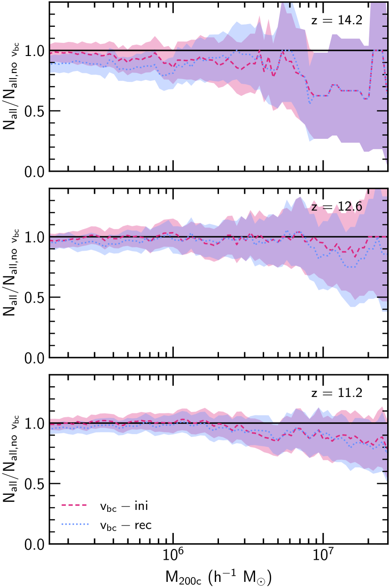
إذا طبقنا الآن الشروط الموصوفة في القسم 3.4، أي ألا ندرج في تحليلنا أي هالات تكون ملوثة عند أي نقطة في المحاكاة، فإننا نحصل على فهرس مختزل. في الشكل 6، نعرض العدد التراكمي للهالات في هذا الفهرس المنظف ، وهو يبين تثبيطا أوضح بكثير في لحالة –rec وزيادة ظاهرية في وفرة الهالات منخفضة الكتلة () لحالة –ini عند (مع أنها ما تزال متسقة مع عدم وجود فرق عن حالة عند مستوى ).
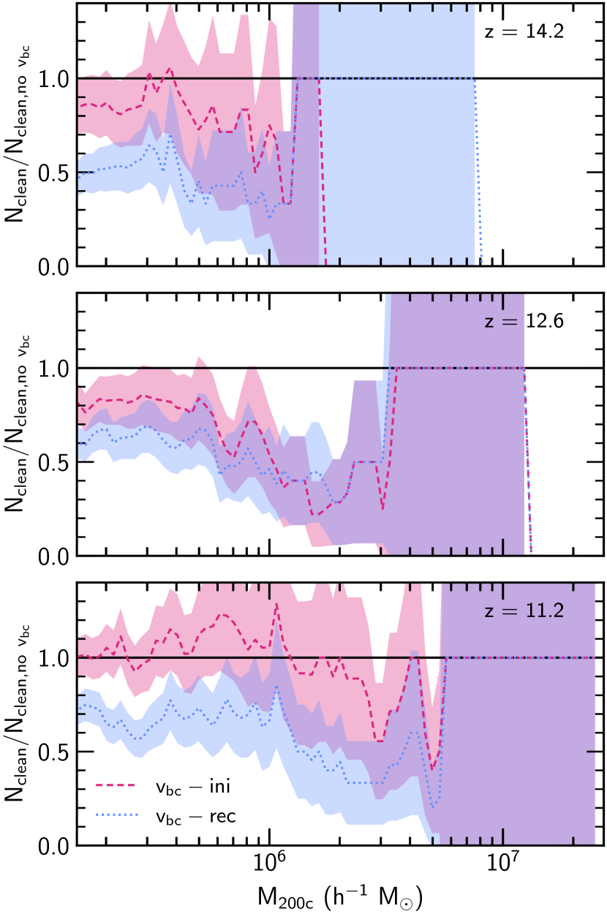
لإبراز أثر إجراء التنظيف نعرض أيضا العدد التراكمي الخام للهالات عند و في الشكل 7. ويمكن رؤية أثر عملية التنظيف الموصوفة في القسم 3.4 بوضوح في اللوحة السفلى من الشكل 7، التي تبين نسبة الفهرس المنظف إلى الفهرس الكامل . وبمقارنة التشغيلات المختلفة، يتضح أن كسرا مختلفا من الهالات يُزال بين كل تشغيل عند كل زمن من الأزمنة المعروضة.
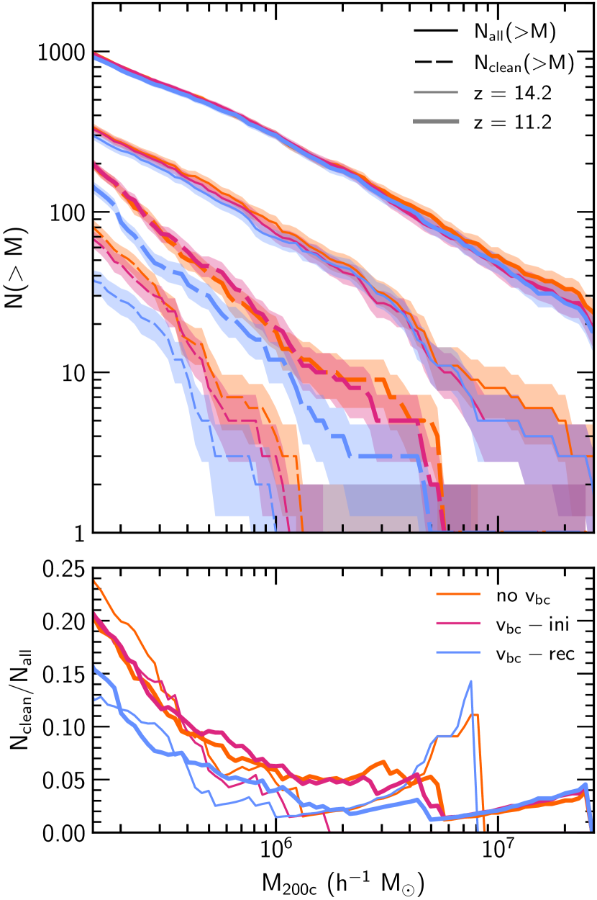
4.2 كسر الباريونات
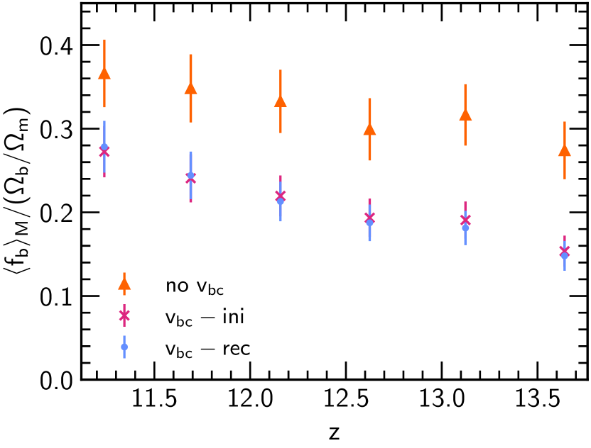
نسمح بتشكل النجوم في هذه التشغيلات، ولذلك يُعرّف كسر الباريونات الكلي لهالة معينة بأنه
| (8) |
حيث هو كتلة الغاز، و الكتلة النجمية، و كتلة المادة المظلمة في كل هالة. ونزيد وزن الهالات الأفضل حلا (أي الأكثر كتلة) بحساب متوسط كسر الباريونات الموزون بالكتلة كما يأتي
| (9) |
والانحراف المعياري الموزون بالكتلة المرتبط به كما يأتي
| (10) |
حيث يكون المجموع على كل الهالات التي تستوفي الشروط في القسم 3.4. يبين الشكل 8 وأشرطة الخطأ المرتبطة به بدلالة . نعرض كل حيث تكون هالات قد تشكلت وتستوفي المعايير في القسم 3.4، بدءا من حيث نستطيع مطابقة هالة بين الحالات الثلاث. ويكون كسر الغاز مثبطا عند كل في حالتي –ini و–rec مقارنة بحالة . وعند الأقدم يكون التثبيط أقوى، غير أنه حتى عند اللقطة النهائية في ، لا يكون لكل من حالتي –rec و–ini ضمن من حالة . ومن اللافت أن عند كل في حالتي –ini و–rec يكادان لا يتميزان، وهما بالتأكيد متسقان مع بعضهما.
4.3 تشكل النجوم
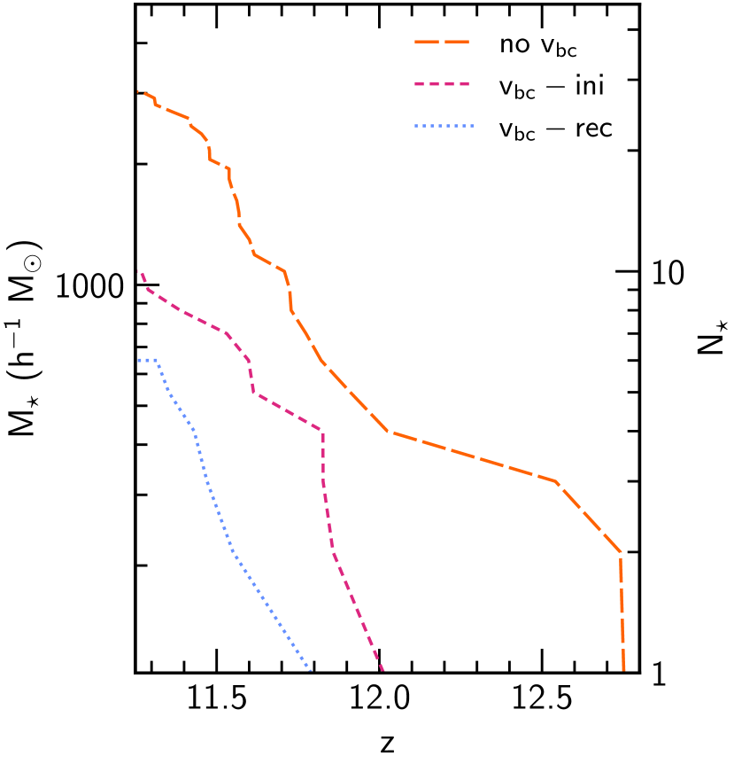
في الشكل 9، نعرض التراكمية المتشكلة في المحاكاة، من دون احتساب فقدان الكتلة بسبب المستعرات العظمى، والعدد المقابل لجسيمات النجوم ، التي يملك كل منها كتلة مقدارها . وفي كل حالة، تشكلت كل الجسيمات النجمية في المحاكاة داخل هالة واحدة. وبالمجموع، تشكل جسيم نجمي بحلول في حالة ، و في حالة –ini، و في حالة –rec. وتستمر هذه التراتبية عبر كل ، إذ يتشكل في حالة عدد أكبر من الجسيمات النجمية مما يتشكل في حالة –ini، وعدد أقل من ذلك في حالة –rec.
في ما يأتي، تقاس كل الأزمنة المذكورة بوحدة نسبة إلى الانفجار العظيم. ولتكميم كيفية تأثير في تشكل النجوم في محاكاتنا، يمكننا حساب التأخر في زمن تشكل النجم ذي الرتبة ، أي ، لكل تشغيل يتضمن مقارنة بتشغيل ، أي ، كما في . وبالنسبة إلى حالة –ini، يحدث أصغر (أكبر) تأخر مقداره () عند تشكل الجسيم النجمي الرابع (الثاني)، بينما نجد في حالة –rec تأخرا مقداره () لتشكل الجسيم النجمي السادس (الثاني).
إن تشكل النجوم في ramses (كما في شفرات المحاكاة الأخرى) عملية عشوائية، ومن هنا تأتي التقلبات الكبيرة في أزمنة التأخر. ويمكننا تقليل أثر هذه العشوائية في نتائجنا بمتوسط أزمنة التأخر، بدلا من النظر في أزمنة التأخر للجسيمات النجمية الفردية. ونجد متوسط زمن تأخر مقداره و لحالتي –ini و –rec، على الترتيب.
5 المناقشة
لفهم الزيادة الظاهرية في هالات –ini في الشكل 6، نحتاج إلى استكشاف العدد التراكمي الخام للهالات، المبين في الشكل 7 عند و. والنقطة الرئيسة هي أنه رغم أن الاحتفاظ فقط بالهالات التي لا تتلوث أبدا يضمن ألا تختفي الهالات بين الخطوات الزمنية للتشغيل نفسه، فإنه يعني أيضا أن أعدادا مختلفة من الهالات ستزال بين التشغيلات المختلفة عند أي خطوة زمنية بعينها. وهذا التباين في عدد الهالات المزيلة مسؤول عن التعزيز الظاهري منخفض الكتلة في حالة –ini، لأنه على مجال الكتلة تزال هالات أقل في حالة –ini مما في حالة . وبما أن الأعداد التراكمية للهالات متشابهة جدا أصلا، فإن إزالة عدد أصغر من الهالات في حالة –ini تظهر على هيئة تعزيز نسبي إلى حالة ، بينما هي في الحقيقة مجرد أثر مصطنع لإجراء التنظيف.
نظرا إلى الصعوبات في استخراج عينة من الهالات تكون خالية من التلوث وقابلة للمقارنة بين التشغيلات في الوقت نفسه، لن نستخلص أي استنتاجات كمية عن أثر في الخواص الكلية مثل عدد الهالات المتشكلة. ونبقي هذه المناقشة للأثر المعروف للتلوث، وبالأخص لأهمية التحقق من أي تقنيات تخفيف، لأنها قد تكون مفيدة لأعمال أخرى تستخدم محاكاة التكبير.
إن إدراج يؤثر أيضا على نحو ملحوظ في كسر الباريونات ، إذ نرى أن كسر الباريونات الموزون بالكتلة مثبط عند كل الانزياحات الحمراء في كلتا الحالتين، ويكون التثبيط أقوى عند الانزياح الأحمر الأعلى. وحتى بحلول ، لا تزال حالتا –ini و–rec غير متفقتين مع حالة ، وإن كان الفرق بين الجمهرتين قد انخفض. ومرة أخرى، يرجح أن ذلك يعود إلى اضمحلال مقدار ، الذي يسمح للهالات بمراكمة مزيد من الغاز. ومن المثير للاهتمام أن يكاد لا يختلف بين حالتي –ini و –rec، ما يشير إلى أن إدراج منذ كاف لرصد أثره في كسر الباريونات في الهالات، وإن كانت هناك حاجة إلى عينة أكبر لتأكيد ذلك. ويتفق التثبيط في عند إدراج نوعيا مع الدراسات السابقة.
وينعكس هذا النقصان في كسر الباريونات لحالتي –ini و–rec في الكتلة النجمية التراكمية المتشكلة، إذ تشكلت جسيمات نجمية أقل في الحالتين مما في حالة . ولا يقتصر الأمر على تشكيل عدد أقل من الجسيمات النجمية، بل إنها تبدأ أيضا بتشكيل الجسيمات النجمية متأخرة، لأن أثر هو محو القمم (والقيعان) في تباين كثافة الباريونات، ما يعني أن الغاز يحتاج وقتا أطول ليبلغ الكثافات المطلوبة لتشكل النجوم. ويبلغ متوسط التأخر في تكوين الجسيمات النجمية لحالة –ini و لحالة –rec. ومن Schaerer (2002)، نجد أن هذه التأخيرات كلها من رتبة عمر نجم من الجمهرة الأولى Population (Pop) III كتلته ، والذي يبلغ عمره (الجدول 3 في Schaerer, 2002). أما نجوم Pop III الأكبر كتلة فلها أعمار أقصر، فمثلا يعيش نجم Pop III كتلته مدة لا تتجاوز . وتتكون نجوم Pop III من غاز نقي في البداية، ويؤدي موتها إلى تلويث محيطها المباشر بالمعادن، مدخلا قنوات تبريد جديدة في الكون عالي الانزياح الأحمر. وأي تأخر في إدخال هذه المعادن سيؤخر الانتقال من Pop III إلى Pop II (أي من غاز مُثرى بالمعادن)، وهو ما يمكن، مثلا، أن يؤثر في إشارة (Magg et al., 2022). وفي حالتنا، رغم أننا لا نكوّن نجوم Pop III، فإن الإثراء الكيميائي لا يزال بالغ الأهمية كي يبدأ تشكل النجوم على نحو ملائم، ولا سيما أن كل الجسيمات النجمية تتشكل في الهالة نفسها.
وعلى الرغم من أن الفرق في بين حالتي –ini و–rec يكاد ينعدم عند معظم الانزياحات الحمراء، توجد تراتبية واضحة في كمية النجوم المتشكلة: تشكل العدد الأكبر، وتشكل –ini عددا أقل، وتشكل –rec العدد الأقل، وإن كان ذلك من رتبة بضعة جسيمات نجمية. وهذا الأثر متوقع، لأن عامل الانحياز يمحو قمم الكثافة الباريونية، ولأن هناك هالات أكثر قليلا (أي مواقع تشكل نجوم) في حالة –ini مقارنة بحالة –rec.
6 الاستنتاجات
أجرينا أول محاكاة تكبير كونية تأخذ عينات ذاتية الاتساق من السرعة النسبية بين الباريونات والمادة المظلمة من صندوق كبير . وتنشأ هذه السرعة النسبية طبيعيا عند تهيئة المحاكاة باستخدام دوال انتقال ذات اتساعات منفصلة لسرعات الباريونات والمادة المظلمة، وقد بينا أن صندوقا بهذا الحجم تقريبا مطلوب لأخذ عينات مناسبة من كل المقاييس المرتبطة بالسرعة النسبية. غير أن تهيئة المحاكاة بهذه الطريقة وحدها تفوّت أثر السرعات النسبية من حتى زمن بدء المحاكاة، . طورنا منهجية تعوض أثر في اضطرابات كثافة الباريونات وسرعتها بحساب عامل ‘انحياز’ ، يُلف مع الشروط الابتدائية. وتحققنا من أن منهجيتنا تعمل كما هو متوقع بالمقارنة مع أعمال سابقة (انظر الملحق A).
بوصف ذلك أول برهنة لمنهجيتنا، طبقناها على منطقة تكبير فائقة الدقة في صندوق فرعي ، مستخرج من الصندوق الرئيس . وتتمركز منطقة التكبير على المنطقة ذات أكبر سرعة نسبية في صندوق ، والتي لها قيمة RMS مقدارها عند ، وتقابل . نجد توافقا نوعيا مع الأعمال السابقة، وتحديدا انخفاضا في كسر الباريونات في الهالات، وتأخرا في بدء تشكل النجوم عند الانزياح الأحمر العالي، وتثبيطا للكتلة النجمية النهائية. وتتناقص قوة الأثر مع الانزياح الأحمر، لكن المحاكاتين لا تزالان تبديان بعض الفروق بحلول . ونجد أن التأخر في بدء تشكل النجوم من رتبة عمر نجم Pop III كتلته . كما نختبر أثر إدراج عامل الانحياز بتشغيل محاكاة تتضمن السرعة النسبية منذ زمن بدء المحاكاة فقط. وفي هذه الحالة، نجد أن عددا أكبر من النجوم يتشكل مقارنة بالمحاكاة التي تتضمن عامل الانحياز، لكن لا يكاد يحدث تغير في متوسط كسر الباريونات، إلا عند أقدم انزياح أحمر. وبسبب صغر حجم منطقة التكبير لدينا، فإن الغالبية العظمى من الهالات في محاكاتنا ملوثة بجسيمات منخفضة الدقة، ولذلك لا نستطيع استخلاص أي استنتاجات قوية بخصوص دالة كتلة الهالات.
إن شفراتنا لإنتاج هذه الشروط الابتدائية المعوضة متاحة علنا 55 5 https://github.com/lconaboy/drft، ونأمل أن تكون مفيدة لدراسة هذا الأثر في السياق الكوني الكامل.
الشكر والتقدير
نشكر الحكم المجهول على ملاحظاته البنّاءة التي حسنت هذه الورقة. ويشكر LC Antony Lewis وJoakim Rosdahl على مناقشات مفيدة. دُعم LC بمنحة طلابية من STFC، ويقر بالدعم غير المباشر من زمالة Royal Society Dorothy Hodgkin ومنحة Royal Society Enhancement Award. ودُعم ITI من Science and Technology Facilities Council [أرقام المنح ST/I000976/1 وST/T000473/1] ومن Southeast Physics Network. ويدعم AF زمالة Royal Society University Research Fellowship URF/R1/180523. استخدم هذا العمل منشأة DiRAC@Durham التي يديرها Institute for Computational Cosmology نيابة عن STFC DiRAC HPC Facility (www.dirac.ac.uk). ومُولت المعدات من تمويل BEIS الرأسمالي عبر منح STFC الرأسمالية ST/K00042X/1، ST/P002293/1، ST/R002371/1 وST/S002502/1، Durham University ومنحة تشغيل STFC ST/R000832/1. DiRAC جزء من البنية التحتية الإلكترونية الوطنية. ويقر المؤلفون بامتنان بدعم Gauss Centre for Supercomputing e.V. (www.gauss-centre.eu) لهذا المشروع عبر توفير زمن حوسبة من خلال John von Neumann Institute for Computing (NIC) على الحاسوب الفائق GCS JUWELS في Jülich Supercomputing Centre (JSC). ونقر بأن نتائج هذا البحث تحققت باستخدام مورد PRACE Research Infrastructure Galileo الكائن في Italy في CINECA. ونقر لـ PRACE بمنحنا حق النفاذ إلى Beskow/Dardel المستضاف لدى PDC Center for High Performance Computing، KTH Royal Institute of Technology، Sweden. استفاد هذا العمل من حزم البرمجيات الآتية: numpy (Harris et al., 2020); matplotlib (Hunter, 2007); scipy (Virtanen et al., 2020); yt (Turk et al., 2011); ytree (Smith & Lang, 2019); hmf (Murray et al., 2013) و cmasher (van der Velden, 2020).
إتاحة البيانات
تتوفر الشفرة الخاصة بحساب عامل الانحياز وتطبيقه في https://github.com/lconaboy/drft. وستُتاح البيانات التي يستند إليها هذا المقال بناء على طلب معقول إلى المؤلف المراسل.
References
- Agertz et al. (2007) Agertz O., et al., 2007, Monthly Notices of the Royal Astronomical Society, 380, 963
- Ahn (2016) Ahn K., 2016, The Astrophysical Journal, 830, 68
- Ahn & Smith (2018) Ahn K., Smith B. D., 2018, The Astrophysical Journal, 869, 76
- Alam et al. (2017) Alam S., et al., 2017, Monthly Notices of the Royal Astronomical Society, 470, 2617
- Ali-Haïmoud et al. (2014) Ali-Haïmoud Y., Meerburg P. D., Yuan S., 2014, Physical Review D, 89, 083506
- Barkana (2016) Barkana R., 2016, Physics Reports, 645, 1
- Behroozi et al. (2013) Behroozi P. S., Wechsler R. H., Wu H.-Y., Busha M. T., Klypin A. A., Primack J. R., 2013, The Astrophysical Journal, 763, 18
- Bertschinger (2001) Bertschinger E., 2001, The Astrophysical Journal Supplement Series, 137, 1
- Beutler et al. (2017) Beutler F., Seljak U., Vlah Z., 2017, Monthly Notices of the Royal Astronomical Society, 470, 2723
- Bovy & Dvorkin (2013) Bovy J., Dvorkin C., 2013, The Astrophysical Journal, 768, 70
- Cain et al. (2020) Cain C., D’Aloisio A., Iršič V., McQuinn M., Trac H., 2020, arXiv e-prints, 2004, arXiv:2004.10209
- Chiou et al. (2018) Chiou Y. S., Naoz S., Marinacci F., Vogelsberger M., 2018, Monthly Notices of the Royal Astronomical Society, 481, 3108
- Chiou et al. (2019) Chiou Y. S., Naoz S., Burkhart B., Marinacci F., Vogelsberger M., 2019, The Astrophysical Journal, 878, L23
- Chiou et al. (2021) Chiou Y. S., Naoz S., Burkhart B., Marinacci F., Vogelsberger M., 2021, The Astrophysical Journal, 906, 25
- Chluba & Thomas (2011) Chluba J., Thomas R. M., 2011, Monthly Notices of the Royal Astronomical Society, 412, 748
- Chluba et al. (2010) Chluba J., Vasil G. M., Dursi L. J., 2010, Monthly Notices of the Royal Astronomical Society, 407, 599
- Cohen et al. (2016) Cohen A., Fialkov A., Barkana R., 2016, Monthly Notices of the Royal Astronomical Society, 459, L90
- Dalal et al. (2010) Dalal N., Pen U.-L., Seljak U., 2010, Journal of Cosmology and Astroparticle Physics, 11, 007
- Davis et al. (1985) Davis M., Efstathiou G., Frenk C. S., White S. D. M., 1985, The Astrophysical Journal, 292, 371
- Druschke et al. (2020) Druschke M., Schauer A. T. P., Glover S. C. O., Klessen R. S., 2020, Monthly Notices of the Royal Astronomical Society, 498, 4839
- Dubois & Teyssier (2008) Dubois Y., Teyssier R., 2008, Astronomy and Astrophysics, 477, 79
- Fialkov (2014) Fialkov A., 2014, International Journal of Modern Physics D, 23, 1430017
- Fialkov et al. (2012) Fialkov A., Barkana R., Tseliakhovich D., Hirata C. M., 2012, Monthly Notices of the Royal Astronomical Society, 424, 1335
- Fialkov et al. (2013) Fialkov A., Barkana R., Visbal E., Tseliakhovich D., Hirata C. M., 2013, Monthly Notices of the Royal Astronomical Society, 432, 2909
- Fialkov et al. (2018) Fialkov A., Barkana R., Cohen A., 2018, Physical Review Letters, 121, 011101
- Gill et al. (2004) Gill S. P. D., Knebe A., Gibson B. K., 2004, Monthly Notices of the Royal Astronomical Society, 351, 399
- Greif et al. (2011) Greif T. H., White S. D. M., Klessen R. S., Springel V., 2011, The Astrophysical Journal, 736, 147
- Hahn & Abel (2011) Hahn O., Abel T., 2011, Monthly Notices of the Royal Astronomical Society, 415, 2101
- Harris et al. (2020) Harris C. R., et al., 2020, Nature, 585, 357
- Hirano et al. (2017) Hirano S., Hosokawa T., Yoshida N., Kuiper R., 2017, Science, 357, 1375
- Hunter (2007) Hunter J. D., 2007, Computing in Science and Engineering, 9, 90
- Knebe et al. (2013) Knebe A., et al., 2013, Monthly Notices of the Royal Astronomical Society, 428, 2039
- Knollmann & Knebe (2009) Knollmann S. R., Knebe A., 2009, The Astrophysical Journal Supplement Series, 182, 608
- Komatsu et al. (2009) Komatsu E., et al., 2009, The Astrophysical Journal Supplement Series, 180, 330
- Lake et al. (2021) Lake W., Naoz S., Chiou Y. S., Burkhart B., Marinacci F., Vogelsberger M., Kremer K., 2021, The Astrophysical Journal, 922, 86
- Lewis et al. (2000) Lewis A., Challinor A., Lasenby A., 2000, The Astrophysical Journal, 538, 473
- Long et al. (2022) Long H., Givans J. J., Hirata C. M., 2022, Monthly Notices of the Royal Astronomical Society, 513, 117
- Magg et al. (2022) Magg M., et al., 2022, Monthly Notices of the Royal Astronomical Society
- Maio et al. (2011) Maio U., Koopmans L. V. E., Ciardi B., 2011, Monthly Notices of the Royal Astronomical Society, 412, L40
- McQuinn & O’Leary (2012) McQuinn M., O’Leary R. M., 2012, The Astrophysical Journal, 760, 3
- Muñoz (2019) Muñoz J. B., 2019, Physical Review D, 100, 063538
- Muñoz et al. (2022) Muñoz J. B., Qin Y., Mesinger A., Murray S. G., Greig B., Mason C., 2022, Monthly Notices of the Royal Astronomical Society, 511, 3657
- Murray et al. (2013) Murray S. G., Power C., Robotham A. S. G., 2013, Astronomy and Computing, 3, 23
- Naoz & Barkana (2005) Naoz S., Barkana R., 2005, Monthly Notices of the Royal Astronomical Society, 362, 1047
- Naoz & Barkana (2007) Naoz S., Barkana R., 2007, Monthly Notices of the Royal Astronomical Society, 377, 667
- Naoz & Narayan (2014) Naoz S., Narayan R., 2014, The Astrophysical Journal, 791, L8
- Naoz et al. (2012) Naoz S., Yoshida N., Gnedin N. Y., 2012, The Astrophysical Journal, 747, 128
- Naoz et al. (2013) Naoz S., Yoshida N., Gnedin N. Y., 2013, The Astrophysical Journal, 763, 27
- O’Leary & McQuinn (2012) O’Leary R. M., McQuinn M., 2012, The Astrophysical Journal, 760, 4
- Oñorbe et al. (2014) Oñorbe J., Garrison-Kimmel S., Maller A. H., Bullock J. S., Rocha M., Hahn O., 2014, Monthly Notices of the Royal Astronomical Society, 437, 1894
- Planck Collaboration et al. (2020) Planck Collaboration et al., 2020, Astronomy & Astrophysics, 641, A6
- Pontzen et al. (2020) Pontzen A., Rey M. P., Cadiou C., Agertz O., Teyssier R., Read J. I., Orkney M. D. A., 2020, arXiv e-prints, 2009, arXiv:2009.03313
- Popa et al. (2016) Popa C., Naoz S., Marinacci F., Vogelsberger M., 2016, Monthly Notices of the Royal Astronomical Society, 460, 1625
- Schaerer (2002) Schaerer D., 2002, Astronomy & Astrophysics, 382, 28
- Schauer et al. (2017) Schauer A. T. P., Regan J., Glover S. C. O., Klessen R. S., 2017, Monthly Notices of the Royal Astronomical Society, 471, 4878
- Schauer et al. (2019) Schauer A. T. P., Glover S. C. O., Klessen R. S., Ceverino D., 2019, Monthly Notices of the Royal Astronomical Society, 484, 3510
- Schauer et al. (2021) Schauer A. T. P., Glover S. C. O., Klessen R. S., Clark P., 2021, Monthly Notices of the Royal Astronomical Society, 507, 1775
- Seager et al. (1999) Seager S., Sasselov D. D., Scott D., 1999, The Astrophysical Journal Letters, 523, L1
- Slepian & Eisenstein (2015) Slepian Z., Eisenstein D. J., 2015, Monthly Notices of the Royal Astronomical Society, 448, 9
- Slepian et al. (2018) Slepian Z., et al., 2018, Monthly Notices of the Royal Astronomical Society, 474, 2109
- Smith & Lang (2019) Smith B., Lang M., 2019, The Journal of Open Source Software, 4, 1881
- Snaith et al. (2018) Snaith O. N., Park C., Kim J., Rosdahl J., 2018, Monthly Notices of the Royal Astronomical Society, 477, 983
- Springel (2005) Springel V., 2005, Monthly Notices of the Royal Astronomical Society, 364, 1105
- Stacy et al. (2011) Stacy A., Bromm V., Loeb A., 2011, The Astrophysical Journal, 730, L1
- Sunyaev & Zeldovich (1970) Sunyaev R. A., Zeldovich Y. B., 1970, Astrophysics and Space Science, Volume 7, Issue 1, pp.20-30, 7, 20
- Teyssier (2002) Teyssier R., 2002, Astronomy and Astrophysics, 385, 337
- Tseliakhovich & Hirata (2010) Tseliakhovich D., Hirata C., 2010, Physical Review D, 82, 083520
- Tseliakhovich et al. (2011) Tseliakhovich D., Barkana R., Hirata C. M., 2011, Monthly Notices of the Royal Astronomical Society, 418, 906
- Turk et al. (2011) Turk M. J., Smith B. D., Oishi J. S., Skory S., Skillman S. W., Abel T., Norman M. L., 2011, The Astrophysical Journal Supplement Series, 192, 9
- Virtanen et al. (2020) Virtanen P., et al., 2020, Nature Methods, 17, 261
- Visbal et al. (2012) Visbal E., Barkana R., Fialkov A., Tseliakhovich D., Hirata C. M., 2012, Nature, 487, 70
- Watson et al. (2013) Watson W. A., Iliev I. T., D’Aloisio A., Knebe A., Shapiro P. R., Yepes G., 2013, Monthly Notices of the Royal Astronomical Society, 433, 1230
- Wu et al. (2015) Wu H.-Y., Evrard A. E., Hahn O., Martizzi D., Teyssier R., Wechsler R. H., 2015, Monthly Notices of the Royal Astronomical Society, 452, 1982
- Yoo & Seljak (2013) Yoo J., Seljak U., 2013, Physical Review D, 88, 103520
- van der Velden (2020) van der Velden E., 2020, The Journal of Open Source Software, 5, 2004
Appendix A مقارنة مع أعمال سابقة
نشغل سلسلة من المحاكاة الاختبارية مضبوطة كما في Naoz et al. (2012, 2013)66 6 وجدت دراسة لاحقة أجريت باستخدام شفرة الشبكة المتحركة arepo توافقا أفضل مع علاقة كسر الغاز التحليلية (Popa et al., 2016; Chiou et al., 2018). ولأغراض المقارنة في هذا القسم، تكفي أعمال Naoz et al. (2012, 2013).. وللحالة المحددة المعروضة هنا دقة أساس ( جسيمات مادة مظلمة، وخلايا في البداية)، في صندوق دوري . أجريت المحاكاة في Naoz et al. (2012, 2013) باستخدام شفرة SPH gadget2 (Springel, 2005)، بينما نستخدم نحن شفرة AMR ramses. ونسمح لشبكة AMR بأن تتنقح بحرية حتى ، بما يقابل دقة مرافقة عظمى مقدارها ، وهي قابلة للمقارنة مع طول التليين الثقالي المرافق المستخدم في Naoz et al. (2012). ونستخدم كونيتنا المرجعية (القسم 3.1)، بينما استخدم Naoz et al. (2012) كونية متسقة مع Komatsu et al. (2009) بالمعاملات: ، ، ، 77 7 عندما تذكر الأطوال والكتل بوحدات ، نستخدم من اختيارنا للكونية. و معززا. ونتبنى المعزز كما استُخدم في الدراسات الأصلية. ونهيئ المحاكاة عند 88 8 إن محاكاة Naoz et al. (2012) مهيأة فعليا عند ، لكن كان سينخفض فقط بمقدار في هذا الزمن، ولذلك نهمل هذا الفرق. مع سرعة نسبية مقدارها عند وبدونها. ونحسب أيضا ونطبق عامل الانحياز على المكون الباريوني من الشروط الابتدائية، بينما تُهيأ محاكاة Naoz et al. (2012) عبر حساب دوال انتقال تدرج صراحة أثر . واتباعا لـ Naoz et al. (2012)، نضبط كلا حقلي السرعة ليساويا حقل المادة المظلمة، ونطبق على مركبة من سرعة الباريونات كما يأتي
| (11) |
إن إدراج بهذه الطريقة مبرر لأن حجم الصندوق أصغر بكثير من مقياس ترابط . ولا نسمح بتشكل النجوم في هذه التشغيلات. وتُحدد الهالات كما وصفنا في القسم 3.4، مع ملاحظة أنه رغم أن Naoz et al. (2012) يعرّفون الكثافة الزائدة للهالات بالنسبة إلى كثافة المادة الخلفية ، فإننا نعمل في فترة سيادة المادة لذلك سيكون الفرق صغيرا. وعلى الرغم من أن الكتل النهائية للهالات في Naoz et al. (2012) تُعرّف باستخدام طريقة الكثافة الزائدة الكروية، فإن إيجاد الهالات الابتدائي يتم باستخدام طريقة الأصدقاء-للأصدقاء، التي قد تكون عرضة لـ ‘فرط الربط’ (مثلا Davis et al., 1985)، حيث تُوصل مجموعات متباعدة من الجسيمات وصلا زائفا بجسر جسيمات منتشر. وإن إعادة تعريفهم لكتلة الهالة باستخدام طريقة الكثافة الزائدة الكروية ستخفف إلى حد ما من الأثر (إن وجد) لفرط الربط.
لحساب أثر ، نقارن بمحاكاة بلا ، حيث يكون حقل سرعة الباريونات مساويا لحقل سرعة المادة المظلمة. ولتكميم هذا الأثر، نحسب الفرق الكسري لكمية كما يأتي
| (12) |
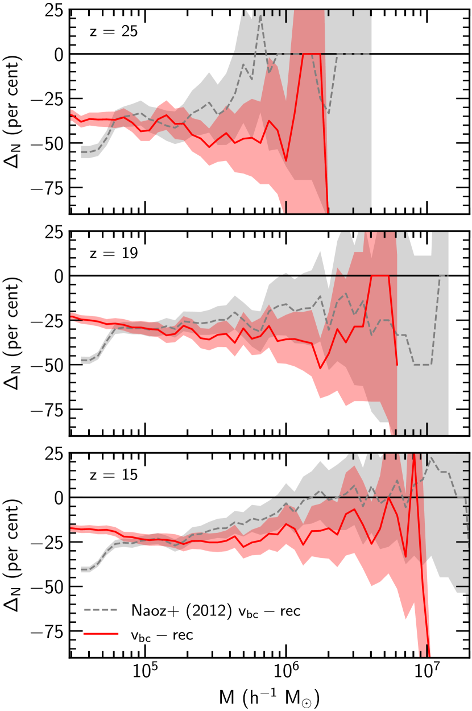
أولا، ننظر في الأثر في دالة كتلة الهالات التراكمية ، كما في Naoz et al. (2012). يبين الشكل 10 النقصان في للحالة ذات مقارنة بالحالة بدونه، لكل من محاكاتنا وتشغيل Naoz et al. (2012). ونرى سلوكا مشابها نوعيا، إذ نرصد نقصانا بين و عند كل الانزياحات الحمراء المعروضة ولكل الكتل تقريبا.
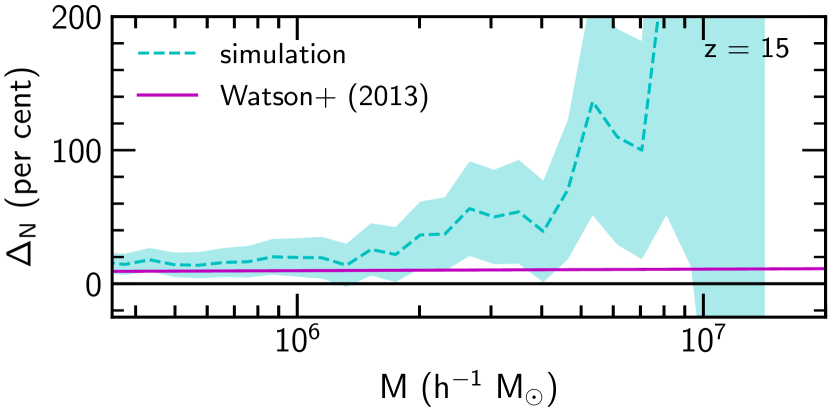
غير أن الشكل العام لـ لدينا مختلف قليلا عن Naoz et al. (2012)؛ فنحن نتطابق جيدا دون ، لكننا نظهر تثبيطا نسبيا أكبر فوق هذه الكتلة. ويعود هذا التباين، جزئيا على الأقل، إلى اختلاف شفرات المحاكاة المستخدمة وحقول الضجيج الأبيض المختلفة في الشروط الابتدائية. ومصدر آخر مهم للاختلاف هو الكونيات المستخدمة. يبين الشكل 11 الفرق المتوقع عند بمقارنة دوال كتلة التحليلية لـ Watson et al. (2013) (أرجواني مصمت). ومن ذلك، نتوقع أن تمتلك محاكاة Naoz et al. (2012) عددا أكبر من الهالات بنسبة عند . وتزداد هذه الزيادة في عدد الهالات مع الكتلة، وعند نتوقع عددا أكبر من الهالات بنسبة في محاكاة Naoz et al. (2012). وتؤكد المحاكاة ذلك فعلا (سماوي متقطع)، إذ تبين أن محاكاة Naoz et al. (2012) تنتج هالات أكثر عند كل الكتل. وعند الكتل الأعلى، يتباعد مع صغر العدد المطلق للهالات. وكما نوقش أعلاه، يستخدم Naoz et al. (2012) مجموعات الأصدقاء-للأصدقاء نقطة بدء، وقد يكون هذا مصدرا للتباين عند الكتلة العالية في الشكل 11.
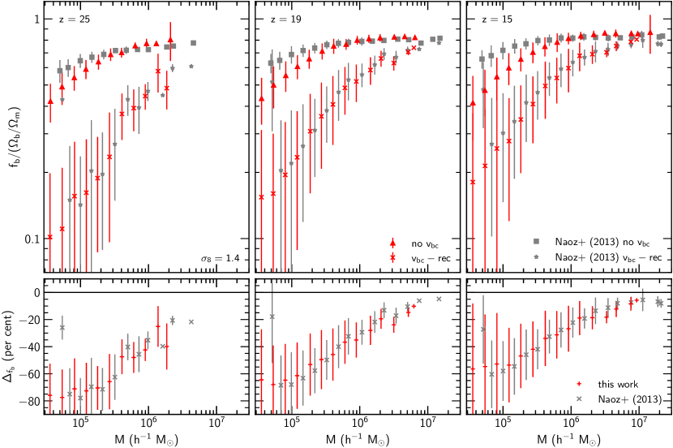
بعد ذلك، نوجه اهتمامنا إلى كسر الغاز في الهالات، كما دُرس في Naoz et al. (2013). وبما أننا لا ندرج تشكل النجوم في هذه التشغيلات، فإن كسر الباريونات هو ببساطة كتلة غاز الهالة مقسومة على كتلة الهالة الكلية
| (13) |
يبين الشكل 12 كسور الغاز المبوبة (اللوحة العليا) لمحاكاتنا ومحاكاة Naoz et al. (2013)، وكل منها مطبع إلى المتوسط الكوني للكونية المناسبة، والنقصان (اللوحة السفلى) كما عُرّف في المعادلة (12). ونأخذ منتصف خانة الكتلة ليكون المتوسط لكل قيم الكتلة في تلك الخانة. وتكون كسور الغاز المبوبة لدى Naoz et al. (2013) أعلى قليلا منها في هذا العمل، لكنها تظهر اعتمادا على الكتلة مشابها تقريبا. إن التوافق بين المحاكاتين في مقدار النقصان لافت؛ فلهما اعتماد على الكتلة متشابه للغاية. ويوجد بعض الفرق في كسور الباريونات المبوبة، وبخاصة أننا نجد تثبيطا أكبر قليلا عند الكتل المنخفضة. ويرجح أن ذلك يعود إلى اختلاف الشفرة المستخدمة، إذ، كما ذكرنا سابقا، استخدم Naoz et al. (2013) gadget2 (Springel, 2005)، بينما نستخدم نحن ramses. وثمة فروق موثقة جيدا بين الشفرات اللاغرانجية (مثل SPH) والأويلرية (مثل AMR) (مثلا Agertz et al., 2007)، وقد ثبت فعلا أن الانتشار العددي الناتج عن السرعات النسبية بين الباريونات والشبكة يمكن أن ينعم الكثافات اصطناعيا في الشفرات الأويلرية (Pontzen et al., 2020). وعلى أي حال، لا يهمنا مقارنة مزايا الشفرات المختلفة، ولذلك فإن حساب الفرق بين التشغيلات مع وبدونه يمكّننا من إزالة الآثار المصطنعة الناتجة عن اختيار الشفرة.